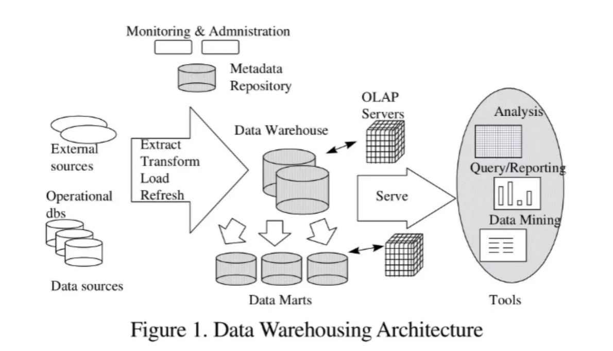
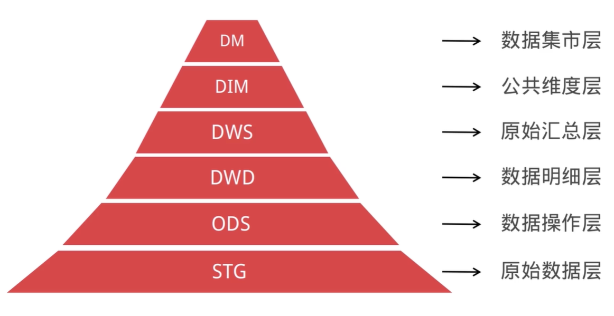
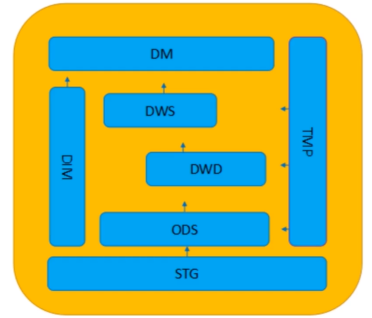

数据仓库VS数据库
数据仓库概念：数据仓库是将多个数据源的数据经过ETL处理之后，按照一定的主题集成起来提供决策支持和联机分析应用的结构化数据环节。
ETL：Extract（抽取）、Transfrom（转换）、Load（加载）
1、数据库是面向事务的设计，数据仓库是面向主题的设计的。
2、数据库一般存储在线交易数据，数据仓库存储的一般是历史数据。
3、数据库设计是避免冗余，采用三范式的规则来设计，数据仓库在设计是有意引入冗余，采用反范式的方式来设计。
OLTP vs OLAP
联机事务处理OLTP是传统的关系型数据库的主要，主要是基本的、日常的事务处理，例如银行交易。
联机分析处理OLAP是数据仓库系统的主要应用，支持复杂的分析操作，侧重决策支持，并且提供直观易懂的查询结果。
数据仓库数据流程图

名词解释：
Operational dbs：内部数据库
External sources：外部数据源
Extract Transform Load Refresh：ETL 转换
Data Warehouse：数据仓库
Monitoring & Administration ：监控 权限
Metadata Repository：元数据存储库
Data Marts：数据集市（主题分类）
OLAP Servers：联机分析服务
Analysis：分析
Query/Reporting：查询/报表
Data Mining：数据挖掘
为什么建设数据仓库
1、各个业务数据存在不一致，数据关系混乱。
2、业务系统一般针对于OLTP，而数据仓库可以实现OLAP分析。
3、数据仓库是多源的复杂环境，可以对多个业务的数据进行统一分析。
数据仓库建设目标
1、集成多源数据，数据来源和去向可追溯，梳理血缘关系。
2、减少重复开发，保存通用型中间数据，避免重复。
3、屏蔽底层业务逻辑，对外提供一致的、结构清晰的数据。
如何实现
1、实现通用型数据ETL工具
2、根据业务建立合理的数据分层模型
数据库分层建设
数仓建设背景
数据建设刚起步，大部分数据经过粗暴的数据接入后直接对接业务。
数据建设发展到一定阶段，发现数据的使用杂乱无章，各种业务都是从原始数据直接计算而得。
各种重复计算，严重浪费了计算资源，需要优化性能。
为什么进行数仓分层
1、清晰数据结构：每个数据分层都有对应的作用域。
2、数据血缘追踪：对各层之间的数据表转换进行跟踪，建立血缘关系
3、减少重复开发：规范数据分层，开发通用的中间层数据。
4、屏蔽原始数据的异常：通过数据分层管控数据质量。
5、屏蔽业务的影响：不必改一次业务就需要重新接入数据。
6、复杂问题简单化：将复杂的数仓架构分解成多个数据层来完成。

STG层
原始数据层：存储原始数据，数据结构与采集数据一致。
存储周期：保存全部数据。
表命名规范：stg_主题_表内容_分表规则。
ODS层
数据操作层：对STG层数据进行初步处理，如去除脏数据，去除无用字段。
存储周期：默认保留近30天数据。
表命名规范：ods_主题_表内容_分表规则。
DWD层
数据明细层：数据处理后的宽表，目标为满足80%的业务需求。
存储周期：保留历史至今所有的数据。
表命名规范：dwd_业务描述_时间粒度。
DWS层
数据汇总层：汇总数据，解决数据汇总计算和数据完整度问题。
存储周期：保留历史至今所有的数据。
表明名规范：dws_业务描述_时间粒度_sum
DIM层
公共维度层：存储公共的信息数据，用于DWD、DWS的数据关联。
存储周期：按需存储，一般保留历史至今所有的数据。
表命名规范：dim_维度描述。
DM层
数据集市层：用于BI、多维分析、标签、数据挖掘等。
存储周期：按需存储，一般保留历史至今所有的数据。
表明名规范：dm_主题_表内容_分表规则。
TMP是计算中的中间表存储位置。
